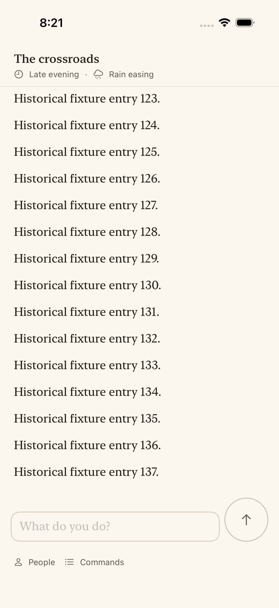

Actual iOS Simulator failure from the full gate on commit 98602dbec. The test expected entry 180, while the viewport was following the latest received row, 137. The fixture delivers initial history asynchronously.

The correction waits for entry180 in the presenter trace before starting the existing three-second visibility check. Both pre- and post-composer-resize assertions remain. Three focused repetitions passed. This is simulator evidence, not physical-iPhone validation.